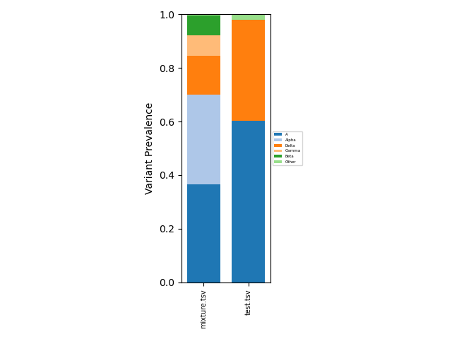
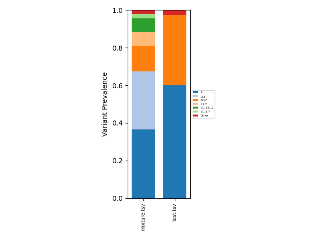
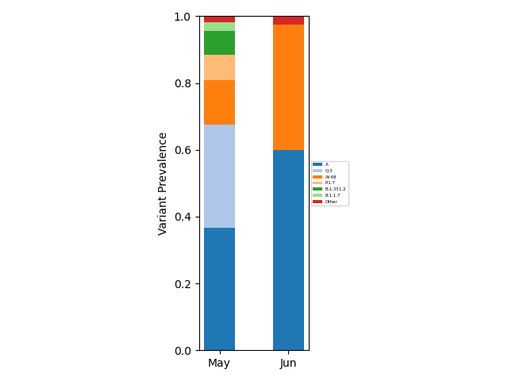
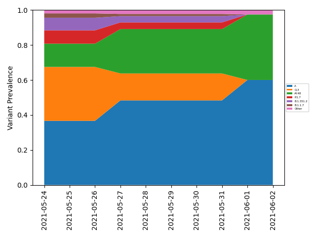

freyja plot
Create plots using the demix outputs AGG_RESULTS
freyja plot [OPTIONS] AGG_RESULTS
Options
- --lineages
modify lineage breakdown
- Default:
False
- --times <times>
provide sample collection information,check data/times_metadata.csv for additional information
- --interval <interval>
define whether the intervals are calculated daily D or monthly M use with –windowsize
- Default:
MS
- --config <config>
allows users to control the colors and grouping of lineages in the plot
- --mincov <mincov>
min genome coverage included
- Default:
60.0
- --output <output>
specify output file name
- Default:
mix_plot.pdf
- --windowsize <windowsize>
width of the rolling average windowfor interval calculation
- Default:
14
- --lineageyml <lineageyml>
Custom lineage hierarchy file
- --thresh <thresh>
pass a minimum lineage abundance
- --writegrouped <writegrouped>
path to write grouped lineage data
Arguments
- AGG_RESULTS
Required argument
Example Usage:
This resulting aggregated data can analyzed directly as a tsv file, or can be visualized using
freyja plot [aggregated-filename-tsv] --output [plot-filename(.pdf,.png,etc.)]
which provides a fractional abundance estimate for all aggregated
samples. To provide a specific lineage breakdown, the --lineages
flag can be used. We now provide a
--config [path-to-plot-config-file] option that allows users to
control the colors and grouping of lineages in the plot. The plot
config file is a yaml file. More
information about the plot config file can be found in the sample
config file. Example outputs:
Summarized |
Lineage-Specific |
|---|---|
 |
 |
If users wish to include sample collection time information, this can be done using
freyja plot [aggregated-filename-tsv] --output [plot-filename(.pdf,.png,etc.)] --times [times_metadata.csv(note csv!)] --interval [MS or D (month/day bins)] --lineageyml [path-to-lineage.yml-file]
A custom lineage hierarchy file can be provided using --lineageyml
option for visualization purposes. When using the --interval D
option, the --windowsize NN should also be specified, where NN
is the width of the rolling average window. See
freyja/data/times_metadata.csv for an example collection time
metadata file. Example outputs:
Month binning |
Daily binning (with smoothing) |
|---|---|
 |
 |